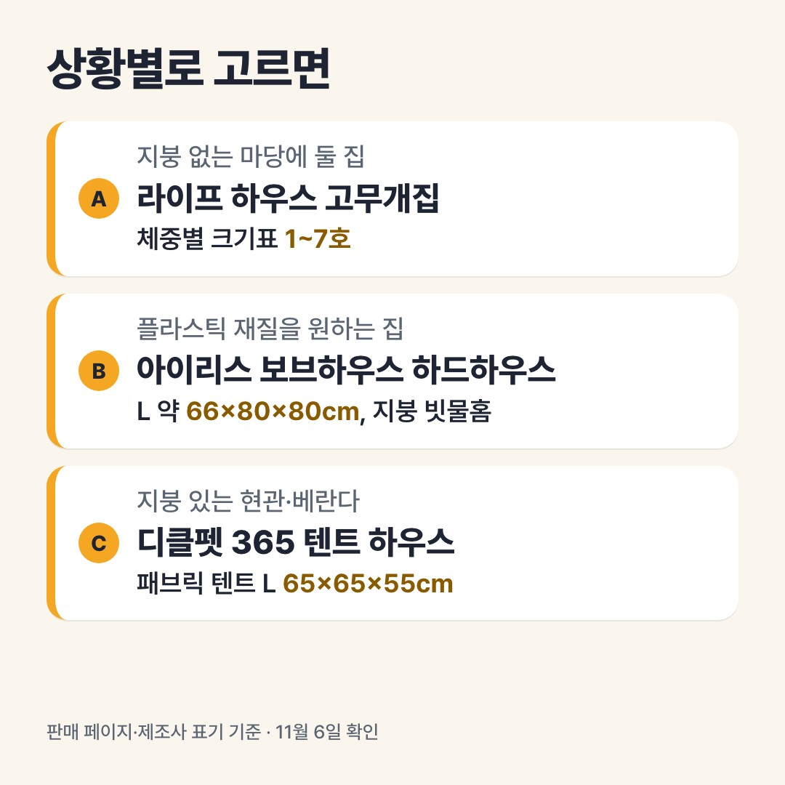

이 게시물은 쿠팡 파트너스 활동의 일환으로, 이에 따른 일정액의 수수료를 제공받습니다.
야외 개집 보온, 바닥 띄우고 입구 가리고 짚 까는 3가지
야외 개집 보온은 바닥을 땅에서 몇 cm 띄우고, 입구를 바람 반대쪽으로 돌려 두꺼운 천이나 비닐로 가리고, 담요 대신 마른 짚을 까는 것부터예요. 미국 적십자와 미국 동물단체 휴메인 월드 포 애니멀스, PETA가 겨울 안내에서 같은 방법을 적었어요.

바닥은 얼마나 띄우고, 입구는 뭘로 가리나요?
미국 적십자와 휴메인 월드 포 애니멀스는 바닥을 땅에서 몇 인치 띄우라고 안내해요. PETA 안내서는 팔레트나 블록 위에 올려 최소 2인치(약 5cm)를 띄우라고 적었어요.
적십자는 입구를 바람 반대쪽으로 돌리고, 방수 마대나 두꺼운 비닐로 가리라고 해요. PETA는 칼집을 낸 자동차 바닥 매트 같은 늘어지는 가림막을 예로 들었어요.
깔개로는 두 곳 모두 짚이나 삼나무 대팻밥을 들었어요. 담요는 젖으면 얼 수 있어 쓰지 말라고 PETA가 적었어요.
물그릇도 얼지 않았는지 자주 보고, 금속 대신 플라스틱 그릇을 쓰라는 게 휴메인 월드 포 애니멀스 안내예요. 모두 해외 자료이고, 국내 기관이 이만큼 자세히 적은 안내는 찾지 못했어요.

집 크기는 어느 정도가 따뜻한가요?
세 곳 모두 개의 체온으로 안이 데워질 만큼 작되, 편히 움직이고 누울 수 있는 크기를 권해요. 그래서 호수를 몸에 맞춰 고르기 쉬운 쪽이 체중별 크기표가 있는 라이프 하우스 고무 개집(11월 6일 표시가 27,000원, 상품평 705개)이에요.
세 집 모두 바닥을 띄운다거나 입구 가림막이 있다는 표기는 찾지 못해서, 받침과 가림막은 따로 생각해야 해요.
몇 kg이면 몇 호를 사야 하나요?
라이프 하우스는 상세 이미지에 호수별 크기(폭×길이×높이)와 추천 체중이 있어요.
- 1호 30×42×50cm: 5kg 미만
- 2호 36×52×64cm: 5~10kg
- 3호 43×59×76cm: 10~15kg
- 4호 48×70×80cm: 15~20kg
- 5호 57×78×93cm: 20~30kg
- 6호 65×90×105cm: 30~40kg
- 7호 78×101×118cm: 40~60kg
폭과 길이는 바닥 면적 기준이고, 위로 갈수록 넓어지는 형태라고 해요. 진돗개는 4호나 5호를 추천한다고 적혀 있어요.
고무집과 플라스틱집, 겨울엔 어느 쪽?
판매 설명에 보온 이야기가 있는 쪽은 고무예요. 라이프 하우스 판매자는 고무가 '보온성이 플라스틱보다 좋다'고 적었고, 지붕창을 길게 만들어 비바람이나 눈을 더 잘 막아 준다고 설명해요.
바닥에는 물빠짐 구멍이 있고, 지붕과 몸체를 분해할 수 있어요. 판매자 스스로 '겨울에는 따뜻하고 여름에는 더운 것'을 장단점으로 적어 두었어요.
아이리스 하드하우스는 폴리프로필렌에 지붕 빗물홈이 있고, 보온이나 단열 문구는 없어요.
지붕 없는 마당에 텐트를 둬도 될까요?
권하지 않아요. 디클펫 공식몰 설명은 '뒷면 메쉬 소재 사용으로 답답하지 않은 공기 순환'과 '방수 및 미끄럼 방지 바닥'이에요. 공기가 통하게 만든 집이고, 비바람을 막는다는 설명은 없어요.
지붕 있는 현관이나 베란다에 둔다면 크기는 M 52×52×44cm, L 65×65×55cm예요(텐트 바깥 기준).
법은 어디까지 정해 두었나요?
동물보호법 시행규칙 별표 2는 실외에서 기르면 '더위, 추위, 눈, 비 및 직사광선 등을 피할 수 있는 휴식공간'을 두고, 바닥은 '망 등 동물의 발이 빠질 수 있는 재질'로 하지 말라고 정해요. 농림축산식품부는 한파특보 때 실외 동물 보온 대책을 보호자의 기본 의무로 안내했어요(2025년 11월 27일 보도자료).
자료 메모: 보온 방법은 미국 적십자(2026년 1월 19일 글)·휴메인 월드 포 애니멀스·PETA 안내, 법 기준은 국가법령정보센터, 텐트 설명은 디클펫 공식몰(모두 11월 11일 확인), 크기와 재질, 가격, 상품평 수는 11월 6일 쿠팡 판매 페이지와 상세 이미지 기준이에요. 세 제품 모두 단열재나 벽 두께 표기가 없고, 27,000원이 몇 호 가격인지도 표기가 없어서 고른 호수의 가격을 링크 화면에서 다시 보면 돼요. 직접 써 본 후기는 아니에요.
라이프 하우스 야외용 고무개집 — 가격·구매처 보기
아이리스 보브하우스 하드하우스 — 가격·구매처 보기
디클펫 365 텐트 하우스 — 가격·구매처 보기
#야외개집 #야외개집보온 #실외개집 #마당개집 #겨울개집